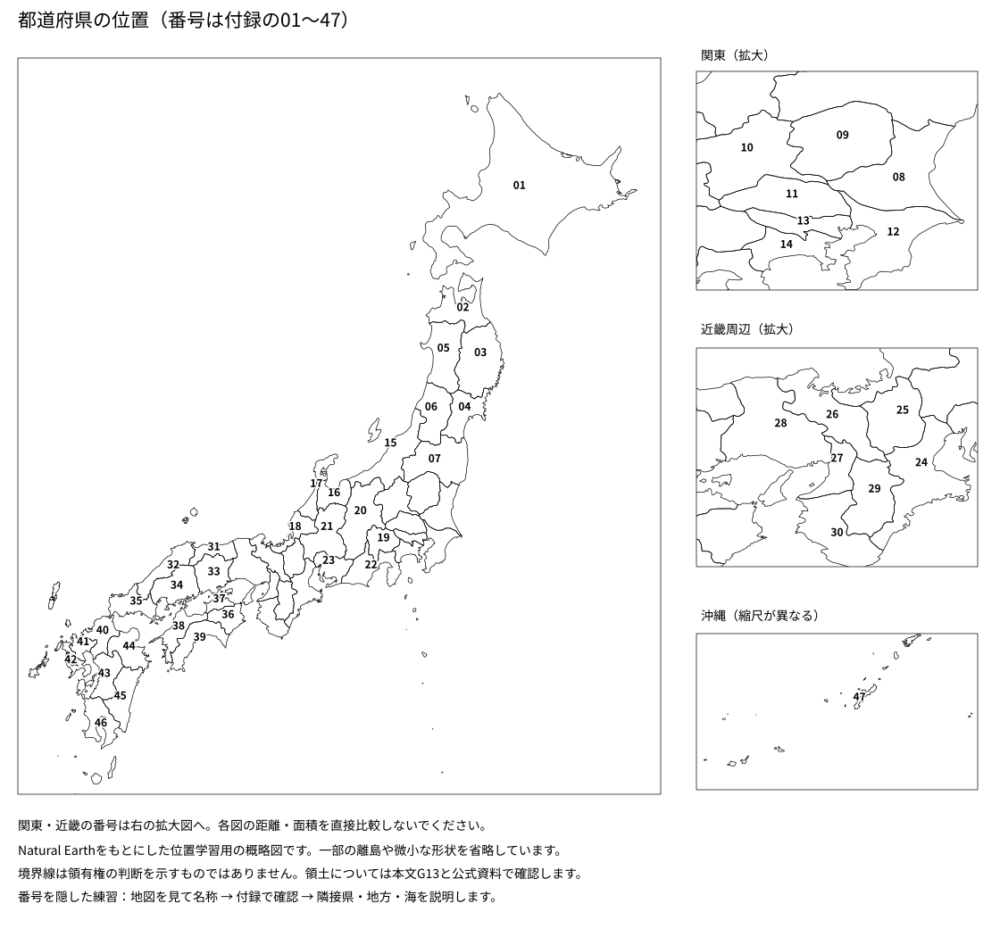

総合問題 01 土台をつないで説明する
目安50分・100点。全て独自に作成した問題です。過去の入試問題の転載・改変ではありません。資料の数値は、歴史上の日付・制度の条件を除き、特記がない限り学習用の架空データです。得点と偏差値を換算することはできません。各回50分・100点を目安に、問題を先に解き、解答・採点基準は後から読みます。意味が合う別表現も正答として扱います。
大問1 世界の位置と気候（16点）
資料1は、北半球の架空の地点A・Bの月別の気温と降水量を比較した雨温図である。
Aは夏の降水量が少なく、Bは一年を通じて降水が少ない。緯度・標高など他の条件は、この図だけでは分からない。
問1（2点）
地点Aの気候として最も適切なものを、地中海性気候・熱帯雨林気候・ツンドラ気候から選びなさい。
問2（4点）
AとBでは、どちらの年間降水量が少ないか。また、年間降水量の多さを判断するとき、最大の一か月だけを見るべきでない理由を答えなさい。
問3（4点）
標準時子午線が東経135度の地域で正午のとき、東経15度の地域の標準時は何時か。夏時間は考えない。計算も示しなさい。
問4（6点）
地点Bで農業を広げるため川の水を大量に使う案について、期待できる効果と、下流の人々に起こりうる問題を一つずつ説明しなさい。
大問2 日本の地域と交通（17点）
資料2は都道府県の位置を確かめる概略図である。番号は地図帳付録の01〜47に対応する。この問題では23＝愛知県、40＝福岡県を用いる。

資料3（架空）
| 地域 | 人口（万人） | 面積（平方km） |
|---|---|---|
| X | 120 | 600 |
| Y | 60 | 600 |
縮尺1:50,000の地図上で、駅と工場の直線距離は6cmである。
問1（3点）
愛知県と福岡県の都道府県庁所在地を、それぞれ答えなさい。
問2（4点）
Xの人口密度を1平方km当たりの人数で求め、Yの何倍かも答えなさい。
問3（4点）
駅と工場の実際の直線距離をkmで求め、計算を示しなさい。
問4（6点）
輸入原料を大量に使う工場が港の近くに立地する利点を、輸送手段と費用の関係から説明しなさい。
大問3 土地と支配の変化（16点）
資料4は制度を学ぶための独自の要約であり、歴史上の文書の引用ではない。
A：戸籍などに基づいて口分田を与え、死後に返させる。
B：新しく開墾した田の永久私有を認める。
C：田畑の面積や生産力を調べ、石高や耕作者を把握する。
D：将軍が所領を保護し、御家人が軍役などを行う。
問1（2点）
Bに当たる743年の法令を答えなさい。
問2（4点）
A・B・Cを、制度が始まった時期の古い順に並べなさい。
問3（4点）
Dの、将軍側の行為と御家人側の務めを、それぞれ何というか。
問4（6点）
元寇後に幕府が御家人へ十分な新しい所領を与えにくかった理由と、それが主従関係に及ぼした影響を説明しなさい。
大問4 江戸から明治への制度改革（17点）
資料5
| 出来事 | 年 |
|---|---|
| 日米和親条約 | 1854 |
| 日米修好通商条約 | 1858 |
| 廃藩置県 | 1871 |
| 地租改正の開始 | 1873 |
| 大日本帝国憲法の発布 | 1889 |
資料6は地租改正後の納税を考える架空例である。ある土地の地価を100円、税率を当初の3％とし、地価・税率は変わらないものとする。
問1（3点）
1854年の条約で開かれた二つの港を答えなさい。
問2（4点）
日米修好通商条約の不平等な点を、裁判と関税について一つずつ答えなさい。
問3（4点）
資料6の年の税額を求めなさい。また、同じ条件のまま不作になっただけで、この税額が自動的に小さくなるか答えなさい。
問4（6点）
廃藩置県によって中央政府の支配が強まった理由を、以前の藩主と改革後の役人の違いに触れて説明しなさい。
大問5 国会・内閣・裁判所（17点）
資料7は日本の国の機関である。Aは法律を制定する機関、Bは行政権を担う機関、Cは裁判を行う機関を示す。
憲法改正の発議を考える架空例として、ある議院の総議員数を300人、ある会議の出席者を240人とする。
問1（3点）
A・B・Cに当たる機関を答えなさい。
問2（4点）
日本の内閣総理大臣を指名する機関と、任命する人を答えなさい。
問3（4点）
架空例の議院で憲法改正の発議に必要な賛成は何人以上か。分母に何を使うかも答えなさい。
問4（6点）
法律を作る力、実行する力、裁く力を一つに集中させないことが、個人の権利の保障に役立つ理由を説明しなさい。
大問6 家計・市場・公正（17点）
資料8（ある商品の架空の市場）
| 価格（円） | 需要量（個） | 供給量（個） |
|---|---|---|
| 100 | 80 | 40 |
| 150 | 60 | 60 |
| 200 | 40 | 80 |
他の条件は変わらず、売り手は売れ残りを減らそうとする。
問1（3点）
需要量と供給量が一致する価格と数量を答えなさい。
問2（4点）
価格が200円のとき、売れ残りは何個か。通常、価格はどちらの方向へ調整されやすいか。
問3（4点）
ある家計の月収が25万円、税・社会保険料が5万円なら可処分所得はいくらか。また、可処分所得と同額の物を必ず全て消費する必要はあるか。
問4（6点）
同じ税額5,000円を払う、月の所得10万円の人と30万円の人の負担を、所得に対する割合から比較しなさい。
解き終えてから、別ファイルの解答・採点基準を開いてください。